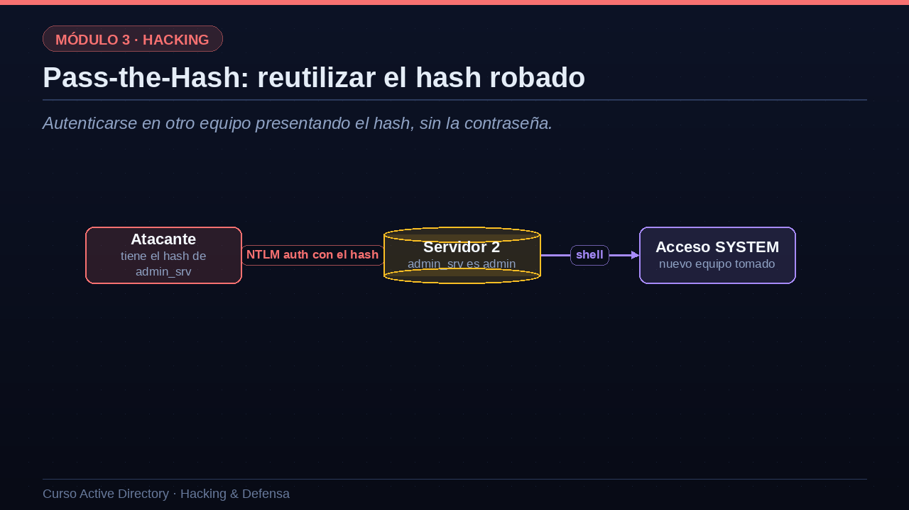
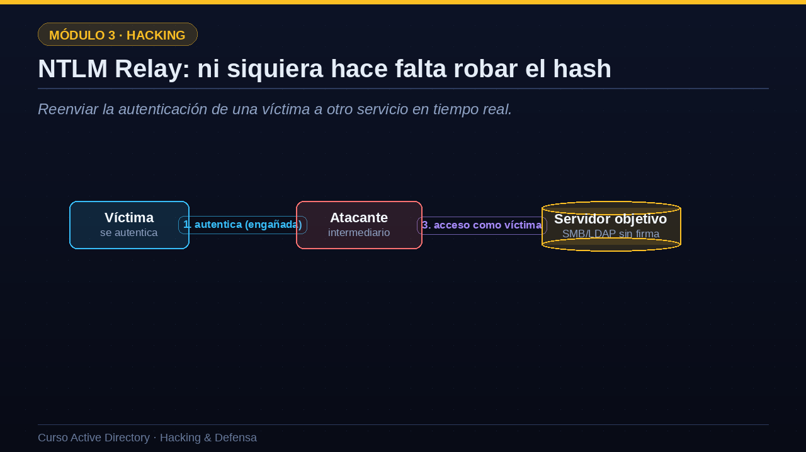

01La raíz del problema: el hash es la credencial
En Windows, demostrar identidad no siempre exige la contraseña en claro.
La raíz del problema ya la conoces de la lección de NTLM: en Windows, el hash de la contraseña funciona como credencial. Para autenticarte con NTLM no hace falta conocer la contraseña en claro; basta con poseer su hash. A eso se suma un segundo factor: cuando un usuario inicia sesión en un equipo, su secreto, ya sea el hash NTLM o un ticket de Kerberos, queda cacheado en la memoria de esa máquina, concretamente en un proceso llamado LSASS. Y aquí llega el tercer factor: quien tenga privilegios de administrador local en ese equipo, es decir el nivel SYSTEM, puede volcar la memoria de LSASS y extraer esos secretos. El resultado es demoledor: el atacante roba el hash o el ticket de otra persona y lo reutiliza para abrir otros equipos de la red, haciéndose pasar por ella. Esto es, en esencia, el movimiento lateral.
- NTLM usa el hash, no la contraseñaSi posees el hash, puedes autenticarte como esa persona.
- Las credenciales quedan en memoriaCuando alguien inicia sesión, su secreto se cachea en el equipo.
- Un administrador local lo puede leerCon acceso de SYSTEM se vuelca la memoria del proceso LSASS.
- ReutilizaciónEse secreto robado abre otros equipos de la red.
02Robo de credenciales con Mimikatz
Con privilegios de administrador local se vuelcan los secretos de LSASS.
Veamos el robo en acción con Mimikatz, la herramienta más conocida para esto. Partimos de tener ya privilegios de administrador local en un equipo. Primero ejecutamos privilege dos puntos dos puntos debug, que nos concede el permiso necesario para acceder a la memoria de otros procesos. Después lanzamos sekurlsa dos puntos dos puntos logonpasswords, el comando estrella, que recorre la memoria de LSASS y extrae los secretos de todas las sesiones activas. En la salida vemos credenciales de varios usuarios: por ejemplo admin guion srv, un administrador de servidores que había iniciado sesión en este equipo, con su hash NTLM a la vista. Ese hash es ahora nuestro. Fíjate en lo que acaba de pasar: comprometimos un equipo cualquiera, pero nos llevamos la credencial de un administrador que pasó por allí. Justo el escenario que el modelo de niveles trata de impedir.
mimikatz # privilege::debug Privilege '20' OK mimikatz # sekurlsa::logonpasswords Usuario : admin_srv NTLM : 9f1c...e4d2 (hash robado) Usuario : ana NTLM : 5a7b...11c0
03Pass-the-Hash: reutilizar el hash robado
Autenticarse en otro equipo presentando el hash, sin la contraseña.
Con el hash robado en la mano, aplicamos Pass-the-Hash, es decir, pasar el hash. La idea es directa: como NTLM solo necesita el hash para autenticar, el atacante se conecta a otro equipo presentando ese hash en lugar de una contraseña. Si la cuenta robada, admin guion srv, es administradora en ese segundo servidor, el atacante obtiene acceso con los máximos privilegios en una máquina nueva, sin haber conocido jamás la contraseña de admin guion srv. Y una vez dentro de ese segundo servidor, repite la jugada: vuelca su memoria, roba nuevas credenciales, y salta a un tercer equipo. Así es como una única cuenta de administrador, reutilizada en muchos sitios, permite al atacante extenderse por toda la red como una mancha de aceite. Cada salto es un Pass-the-Hash.

04Pass-the-Hash y Pass-the-Ticket en la práctica
Veamos las dos variantes con comandos. En Pass-the-Hash, usamos CrackMapExec con la opción mayúscula H para pasar el hash NTLM robado en lugar de la contraseña; si funciona, obtenemos el mensaje Pwned y ejecutamos comandos como SYSTEM en el equipo remoto. La variante hermana es Pass-the-Ticket, pero en lugar de un hash reutilizamos un ticket de Kerberos robado, un TGT o un TGS. Cargamos el ticket en una variable de entorno y luego usamos psexec de Impacket con las opciones de Kerberos y sin contraseña: el sistema acepta el ticket como prueba de identidad y nos da una shell haciéndonos pasar por admin guion srv. La diferencia es sutil pero importante: Pass-the-Hash abusa de NTLM, mientras que Pass-the-Ticket abusa de Kerberos. Ambos logran lo mismo: moverse por la red sin conocer ninguna contraseña.
# Pass-the-Hash: autenticarse con el hash NTLM crackmapexec smb 10.0.0.20 -u admin_srv -H 9f1c...e4d2 -x whoami [+] Pwn3d! nt authority\system # Pass-the-Ticket: reutilizar un ticket Kerberos robado export KRB5CCNAME=ticket.ccache psexec.py -k -no-pass empresa.local/admin_srv@srv-app C:\Windows\system32> (shell como admin_srv)
05NTLM Relay: ni siquiera hace falta robar el hash
Reenviar la autenticación de una víctima a otro servicio en tiempo real.
Hay una variante aún más astuta que ni siquiera requiere robar y crackear nada: el NTLM Relay. Aquí el atacante se coloca como intermediario. Paso uno: engaña a una víctima para que intente autenticarse contra él, por ejemplo envenenando la resolución de nombres de la red con herramientas como Responder. Paso dos: en lugar de procesar esa autenticación, el atacante la reenvía en tiempo real a un servidor objetivo, haciéndose pasar por la víctima. Paso tres: si ese servidor no exige firma en sus comunicaciones, acepta la autenticación reenviada y le da acceso al atacante con los privilegios de la víctima. El relay es especialmente devastador cuando la víctima es una cuenta de equipo con muchos permisos o un administrador. Por eso una de las mitigaciones más importantes de todo AD es, simplemente, exigir firma en SMB y en LDAP, que rompe este ataque de raíz.

06Defensa contra el robo de credenciales
Veamos cómo defenderse, en dos frentes. Primero, evitar el robo. Credential Guard usa virtualización por hardware para aislar el proceso LSASS, de modo que ni siquiera un administrador local, ni Mimikatz, puede leer los secretos: es una de las mitigaciones más eficaces que existen. El Tier Model, que ya conoces, garantiza que las credenciales potentes no acaben en la memoria de equipos de bajo nivel. Y medidas como el grupo Protected Users o LAPS reducen la cantidad de credenciales reutilizables que quedan expuestas. Segundo frente, frenar la reutilización. Exigir firma en SMB y en LDAP rompe el NTLM Relay. Reducir el uso de NTLM, forzando Kerberos y desactivando la vieja versión uno, cierra Pass-the-Hash en muchos escenarios. Y segmentar la red dificulta que el atacante salte libremente de un equipo a otro. En conjunto, estas medidas convierten el movimiento lateral en algo mucho más difícil y ruidoso.
Evitar el robo
- Credential GuardAísla LSASS con virtualización: Mimikatz no lee los secretos.
- Tier ModelLos admin potentes no pisan equipos de bajo nivel.
- Protected Users / LAPSMenos credenciales reutilizables en memoria.
Frenar la reutilización
- Firmar SMB y LDAPRompe el NTLM Relay.
- Reducir NTLMForzar Kerberos y desactivar NTLMv1.
- Segmentar la redDificulta saltar de un equipo a otro.
07Resumen de la lección
Recapitulemos. En Windows, el hash y los tickets funcionan como credenciales, y quedan cacheados en la memoria de cada equipo, de donde un administrador local puede robarlos con herramientas como Mimikatz. Con Pass-the-Hash se reutiliza un hash NTLM robado para autenticarse en otros equipos; con Pass-the-Ticket se hace lo mismo reutilizando tickets de Kerberos. Y el NTLM Relay reenvía en tiempo real la autenticación de una víctima, algo que se frena exigiendo firma en SMB y LDAP. Frente a todo ello, Credential Guard, el Tier Model y la reducción de NTLM son las defensas clave. En la próxima lección conoceremos BloodHound, la herramienta que convierte todos estos permisos y relaciones en un mapa de caminos hacia el control del dominio. Nos vemos en la lección once.
- El hash es la credencialRobar secretos de LSASS permite suplantar a otros.
- Pass-the-HashReutilizar un hash NTLM para abrir otros equipos.
- Pass-the-TicketLo mismo, pero reutilizando tickets de Kerberos.
- NTLM RelayReenviar la autenticación de una víctima; se frena firmando SMB/LDAP.